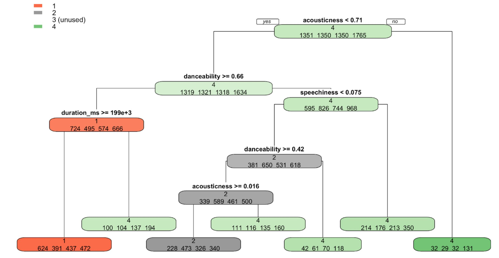
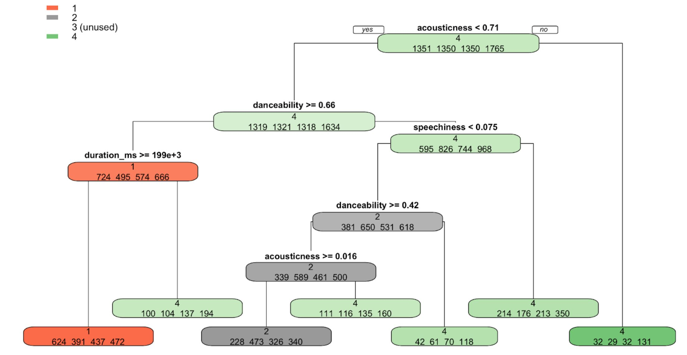

Datascience Course Project
This was for my final project in intro to datascience and the objective was to see if I could use data on existing popular songs to be able to predict traits of future successful songs, providing a competitive advantage to record labels. I used a dataset which collected every song featured on the Billboard Hot 100 from 2000 to 2018. The author of the dataset then supplemented this data with musical information about each song, collected using Spotify’s API. The information from the Billboard Hot 100 indicated basic information such as the title of the song, the artist and the data it was first released as well as information about how well a song performed on the Billboard Hot 100, its highest and lowest position as well as how long the song remained on the billboard. The data from Spotify included some objective measures such as tempo, time-signature and key, as well as some more subjective measures such as danceability and liveliness.
4 different modeling techniques: decision tree, naive Bayes, logistic regression and K-nearest neighbor. However, none of the models were able to tell significant differences between songs that topped the Billboard Hot 100 and songs that just barely made it on. Even though the project did not identify any major correlations between the spotify API data and the songs performance, I still learned a lot working on this project and gained confidence in my datascience abilities.